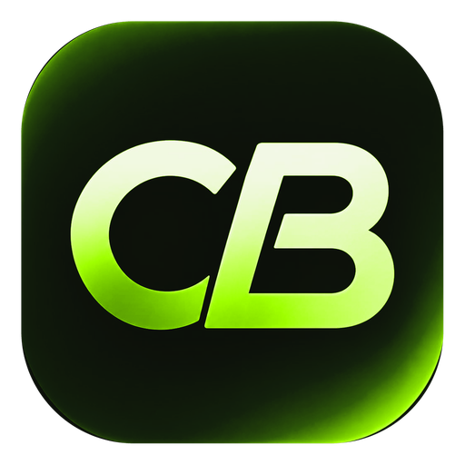
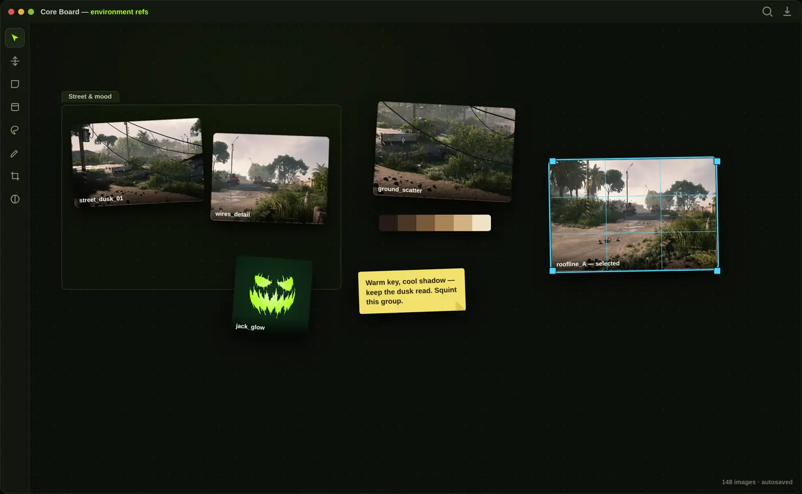
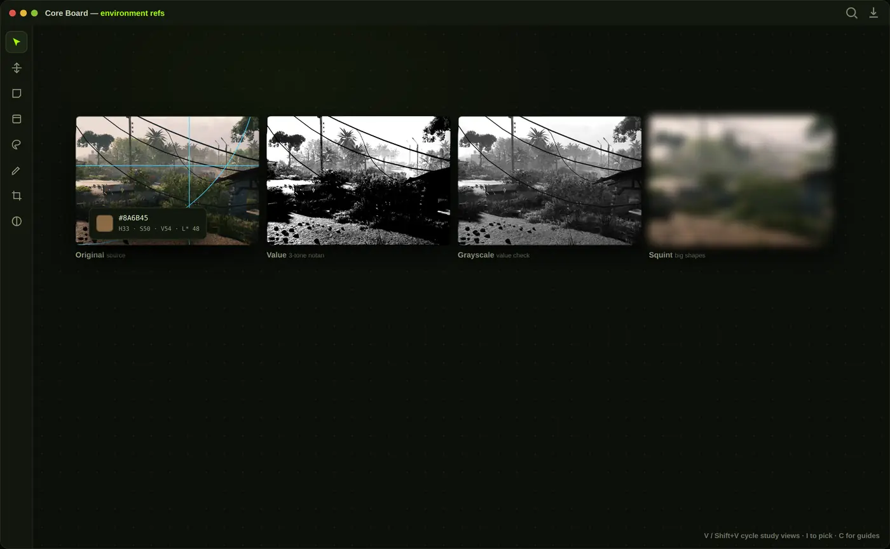

Alternativa gratis a PureRef · App nativaEl tablero de referencias que no se mete en medio.
Core Board es una alternativa gratis y rápida a PureRef. Suelta tus referencias en un lienzo infinito, ordénalas como siempre y estúdialas con vistas de valores, guías de composición y paletas. Todo se guarda solo.
Un lienzo tranquilo, con las herramientas de estudio dentro.


Un tablero de referencias para todo tipo de artistas.
Core Board es una app de escritorio gratis para reunir imágenes de referencia y moodboards, y estudiarlas mientras trabajas.
Concept art e ilustración
Monta moodboards para un personaje o una escena, comprueba la estructura de valores de una referencia y saca la paleta de un cuadro que te encante.
Artistas 3D y de videojuegos
Ten las referencias de entornos y props siempre encima de Blender, Unity o Unreal, junto a tus renders.
Pintores y estudiantes de arte
Estudia valores, notan, saturación y composición con una tecla, y mira los detalles con la lupa.
Tatuaje, diseño y fotografía
Reúne referencias de la web, de PDFs y de YouTube en un solo sitio, anótalas y exporta una hoja limpia para compartir.
Todo lo que debe tener un tablero de referencias.
Un lienzo infinito con las herramientas de estudio que de verdad usan pintores y artistas, y que se guarda solo tras cada cambio.
Lienzo infinito
Arrastra, pega o suelta imágenes, PDFs, enlaces y vídeos de YouTube. Muévete, haz zoom y ordénalo todo en cuadrícula.
Vistas de estudio
Valores, notan, saturación, ruido y "ojos entrecerrados" con una tecla, en una imagen o en todo el tablero.
Guías de composición
Regla de los tercios, cuadrícula phi, espiral áurea, diagonales y cruz central sobre cualquier imagen.
Color y paletas
Saca la paleta de una imagen y usa un cuentagotas que muestra HSV y el valor real (L*).
Dibuja y anota
Flechas, círculos, cajas y trazos en cualquier sitio, notas adhesivas, pies de foto y marcos con título.
Lupa y vista de enfoque
Mantén Z para ampliar un detalle, o pulsa Enter para ver una imagen grande y pasar de una a otra.
Siempre encima
Deja tus referencias flotando sobre Photoshop, Krita, Blender o Unity, con la opacidad que quieras.
Exporta y copia
Exporta el tablero como un PNG (con marca de agua) o copia una imagen con Ctrl+C para pegarla en cualquier app.
Encuentra más
Mantén Q sobre una imagen para buscar imágenes parecidas por valores o paleta, o buscarlas en la web.
Vigila una carpeta
Las capturas o renders que guardes en una carpeta aparecen solos en el tablero.
Etiquetas y búsqueda
Etiqueta, busca, agrupa, bloquea o fija imágenes a la pantalla para mantener el orden.
Se actualiza solo
Te avisa cuando hay una versión nueva y en Windows se actualiza con un clic. Funciona sin conexión.
Una alternativa gratis a PureRef, con herramientas de estudio.
Si has usado PureRef, te sentirás en casa en un minuto. Y Core Board va más allá: te ayuda a estudiar tus referencias, no solo a colgarlas.
Core Board todavía no abre archivos de PureRef (.pur). PureRef es una marca de su propietario; Core Board es una app independiente y no está afiliada ni respaldada por PureRef.
Empieza tu tablero.
Sin cuenta, sin nube, sin suscripción. Tus tableros son carpetas normales en tu disco.
Preguntas frecuentes
¿Core Board es gratis de verdad?
Sí, del todo. Sin precio, sin suscripción, sin cuenta, sin anuncios y sin marca de agua obligatoria.
¿Es una buena alternativa a PureRef?
Si usas PureRef para reunir y ordenar referencias, Core Board hace lo básico: lienzo infinito, arrastrar y soltar o pegar, siempre encima, opacidad de la ventana, voltear, girar, gris y recorte. Además trae herramientas de estudio: valores y notan, guías de composición, paletas, vista de enfoque y dibujo.
¿Puede abrir mis tableros de PureRef (.pur)?
Todavía no. Por ahora, arrastra tus imágenes de referencia a un tablero de Core Board, o vigila la carpeta donde las guardas para que aparezcan solas.
¿En qué ordenadores funciona?
Windows 10 y 11, macOS 11 o más nuevo (Apple Silicon e Intel) y Linux de 64 bits (.deb para Ubuntu, Debian y Mint, o .tar.gz para otras distribuciones).
Windows o macOS me avisan al abrirlo. ¿Es seguro?
El aviso sale porque Core Board todavía no está firmado digitalmente. En Windows, pulsa "Más información" y luego "Ejecutar de todas formas". En Mac, haz clic derecho en la app y elige Abrir. Solo hace falta la primera vez.
¿Está en español?
Sí. Core Board habla español e inglés y sigue el idioma de tu ordenador. Para elegirlo tú, abre la ventana de tableros (Ctrl+O) y elige en Idioma.
¿Funciona sin conexión?
Sí. Todo funciona sin conexión. Solo pegar enlaces, buscar en la web y comprobar actualizaciones necesitan internet, y no se envía nada sobre ti ni tus tableros.